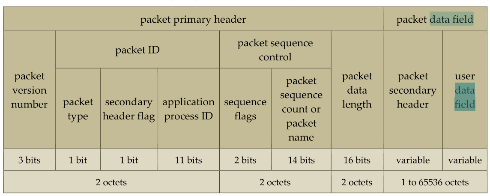
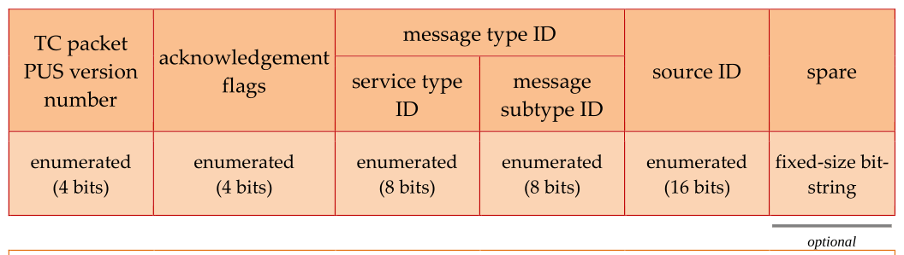

PUS Service ## Space Packet Structure

Packet Version Number
- Set to 0, identifying it as a space packet (version 1 CCSDS packet).
Packet Type Bit
- 0: Telemetry packets.
- 1: Telecommand packets.
Secondary Header Flag
- Indicates the presence or absence of a secondary header:
- Telemetry packets: All include a secondary header, except spacecraft time packets.
- Telecommand packets: All include a secondary header, except CPDU command packets.
Application Process ID (APID)
- Uniquely identifies:
- The source of telemetry packets.
- The destination of telecommand packets.
- Some values are reserved by CCSDS and unavailable for PUS services.
Sequence Flags
- Unused by the protocol but set to “11” to indicate stand-alone packets.
- All packets in this Standard are stand-alone packets.
Packet Sequence Count
- Telemetry packets: Incremented by 1 for each released packet and wraps at (2^{14} - 1).
- Telecommand packets: Use a sequence count or packet name to uniquely identify packets within a communication session.
Packet Data Length Field
- Specifies the length of the packet data field:
- Value is one less than the number of octets in the data field.
- Total packet length = Packet data field length + 6 octets (primary header).
Packet Data Field Structure
- Telemetry Packets:
- Secondary header.
- User data field.
- Telecommand Packets:
- Secondary header.
- User data field.
| ## | # | Telemetry Packet Data Field |
| ## | ## | Telemetry Packet Secondary Header |
|  |
| 1. | * - | *Presence**: All telemetry packets, except spacecraft time packets, include a secondary header. |
| 2. | * - | *Structure: Fields: - Spacecraft Time: Absolute, fixed-size. - PUS Version: 4 bits, set to 2. - Reference Number: 4 bits, enumerated. - Message Type ID: 8 bits, enumerated. - Service Type ID: 8 bits, enumerated. - Message Subtype ID: 8 bits, enumerated. - Message Counter: 16 bits, unsigned integer. - Destination ID: Application process user identifier. - Spare Field**: Optional, used to align header size to integral words. |
| 3. | * - | *Time Reference: Status: - If capable, set to the status of the onboard time reference when tagging packets. - If not capable, set to 0. Time Tag**: Stored in the time field of the header. |
| 4. | * - - | *Message Metadata: Type ID: Set to the identifier of the report. Counter: - If capable, set to the count of messages of this type. - If not capable, set to 0**. |
| 5. | * - - | *Declaration Requirements**: Presence and bit-size of the spare field must be declared for each application process. Time field PFC (Packet Format Control) must align with the spacecraft’s time service. |
| ## - - | ## Th Th | Notes: e PUS Version indicates compliance with ECSS-E-ST-70-41C (version 2). e Spare Field adjusts header length and is application-specific. |
Telecommand Packet Data Field
Telecommand Packet Secondary Header

- Presence:
- All telecommand packets include a secondary header, except for CPDU command packets.
- Structure:
- Fields:
- Acknowledgement Flags: 4 bits, controls reporting of request states:
- Bit 3: Successful acceptance by the destination application process.
- Bit 2: Successful start of execution by the destination application process.
- Bit 1: Progress reporting of execution.
- Bit 0: Successful completion of execution.
- PUS Version: 4 bits, set to 2.
- Message Type ID: 8 bits, enumerated.
- Service Type ID: 8 bits, enumerated.
- Message Subtype ID: 8 bits, enumerated.
- Source ID: 16 bits, identifies the source application process.
- Spare Field: Optional, aligns header size to integral words.
- Acknowledgement Flags: 4 bits, controls reporting of request states:
- Fields:
- Request Metadata:
- Message Type ID: Set to the identifier of the request.
- Source ID: Set to the source identifier of the issuing application process.
- Declaration Requirements:
- Presence and bit-size of the spare field must be declared for each application process.
Notes:
- The PUS Version reflects compliance with ECSS-E-ST-70-41C (version 2).
- Acknowledgement flags provide flexibility in managing state reporting for telecommand requests.
- The Spare Field ensures compatibility with system-specific requirements.
Comprehensive Overview of the Packet Utilization Standard (PUS)
Introduction
The Packet Utilization Standard (PUS), part of the ECSS standards, defines a framework for using telemetry and telecommand packets to monitor and control spacecraft subsystems and payloads. Initially developed by ESA in the 1990s, PUS has become a widely adopted standard for spacecraft operations, reducing mission complexity and enhancing interoperability.
Purpose
PUS establishes a unified structure for spacecraft communication, enabling: - Remote Monitoring: Observing spacecraft status and health. - Command Execution: Controlling onboard systems and payloads. - Operational Consistency: Standardizing processes across missions.
Key Features
- Modular Services: Provides predefined services for common spacecraft operations.
- Tailorability: Allows customization for mission-specific needs.
- Interoperability: Facilitates seamless interaction between ground stations and spacecraft.
Standardized Services
PUS defines various services, each targeting a specific operational aspect. Below is a list of core services:
| No. | Service Name |
|---|---|
| 1 | Telecommand Verification |
| 2 | Device Command Distribution |
| 3 | Housekeeping and Diagnostic Data Reporting |
| 4 | Parameter Statistics Reporting |
| 5 | Event Reporting |
| 6 | Memory Management |
| 8 | Function Management |
| 9 | Time Management |
| 11 | On-board Operations Scheduling |
| 12 | On-board Monitoring |
| 13 | Large Data Transfer |
| 14 | Packet Forwarding Control |
| 15 | On-board Storage and Retrieval |
| 17 | Test |
| 18 | On-board Operations Procedure |
| 19 | Event-Action |
Benefits
- Reduced Complexity: By standardizing telemetry and telecommand operations, PUS simplifies spacecraft design and development.
- Flexibility: Missions can select and implement only the services they require.
- Reliability: Standardized procedures enhance robustness and minimize operational errors.
Tailoring for Missions
Each mission can adapt PUS to its unique requirements by selecting relevant services, adjusting parameters, and defining custom extensions when necessary. The process involves: - Assigning specific Application Process Identifiers (APIDs). - Configuring service capabilities, such as memory management areas or telemetry event thresholds. - Documenting these decisions in a Space-to-Ground Interface Control Document (ICD).
Applications
PUS is a cornerstone of ESA missions, including Rosetta, Envisat, and Integral. It is also suitable for missions with diverse architectures, from centralized systems to distributed networks onboard spacecraft.